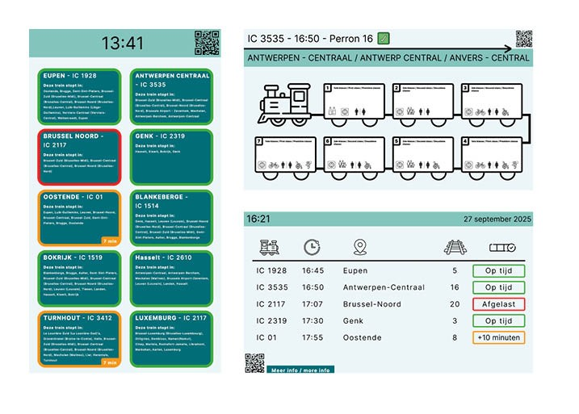

- 3 schermen ontworpen in figma ( Mid-Fi ).
- Feedback gevraagd aan docenten en vrienden/ouders.
- Code gevraagd aan chat GPT voor de HTML structuur.

BROER -> Hij vond het heel duidelijk voor iedereen, hij zou het zelf ook snappen als iemand die niet veel een trein neemt. Hij zou misschien de vertrektijd als eerste zetten. Zijn aandacht gaat als eerste naar de op tijd, afgelast of vertraging vanwege de kleuren. Vind dat het er proffesioneel en genoeg info op staat, heeft een veel rustiger en minder druk gevoel dan de Low-Fi. Als extra tips had hij nog tekst in de wagonscherm groter ( moeilijk leesbaar ), Qr code in perronscherm ook rechts boven omdat het op alle schermen van boven staat, omlijning bij de wagonscherm ook in donkerblauw en niet zwart.
PAPA -> Hij vind dat alles makkelijk begrijpbaar is, hij zou misschien het spoornummer na de treinnummer zetten. Ook zijn aandacht gaan direct naar de elementen met kleur ( op tijd, afgelast, vertraging ). Hij zou niks extra toevoegen omdat het er nu heel duidelijk maar toch ook rustig uitziet.